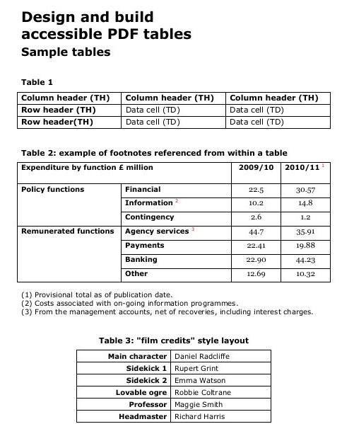
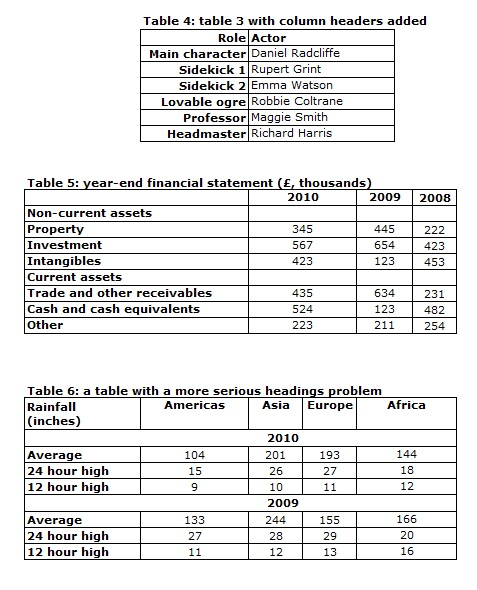

This project involved converting scanned PDF files into editable and well-formatted Microsoft Word documents.
The documents were carefully converted while maintaining the original layout, formatting and readability as accurately as possible.
The scanned PDF files were successfully converted into editable Word documents with clear and organized formatting.
The conversion made the documents easier to edit, update and reuse, while maintaining a professional and readable appearance.
The converted documents are easier to edit, update and manage, helping users save time and reduce manual document preparation.
The organized Word files provide a clean and professional format that can be reused for business, office and administrative purposes.
This conversion service helps turn scanned documents into practical, editable files while keeping the information clear and accessible.